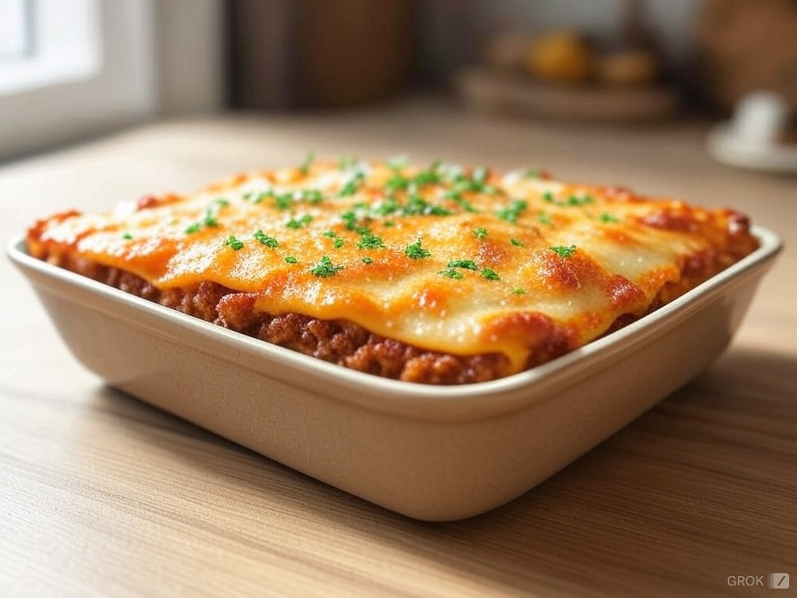

Home
Lasagna recipe

Description
Lasagna is a type of pasta, possibly one of the oldest types, made of wide, flat sheets. Either term can also refer to an Italian dish made of
stacked layers of lasagna alternating with fillings such as ragù (ground
meats and tomato sauce), besciamella (a béchamel sauce made with milk,
butter, and flour) and parmesan.
Ingredients
- Sheets of fresh, handmade pasta or bought, dried sheets
- Ground meat
- Red wine
- Vegetables like onions, garlic, celery and carrots
- Tomato sauce
- Oregano, basil, salt, pepper
- Besciamella sauce (butter, flour, milk, nutmeg, salt, pepper)
- Parmesan cheese
Steps
- Cook the vegetables with some olive oil
- Add the ground meat and cook until it's no longer pink
- Add the red wine and cook until the alcohol is gone
- Add the tomato sauce and let is cook for 2-3 hours at low heat
- Cook the besciamella sauce: melt butter, add flour, cook until golden, add milk, nutmeg, salt, pepper and let it cook until it's thick
- Assemble the lasagna: layer the sheets of pasta, add the meat sauce, besciamella sauce, parmesan, repeat until you run out of ingredients
- Bake at 200°C for 30-40 minutes
Top